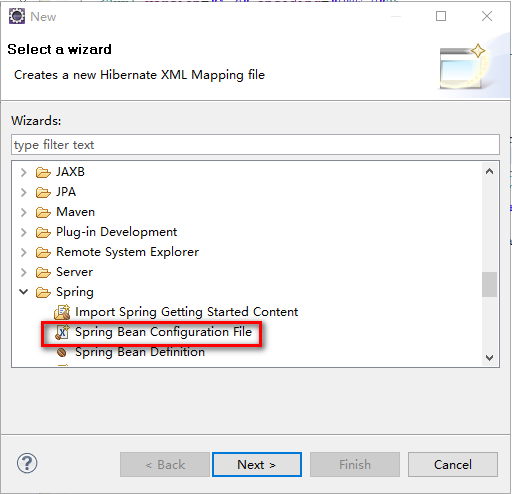
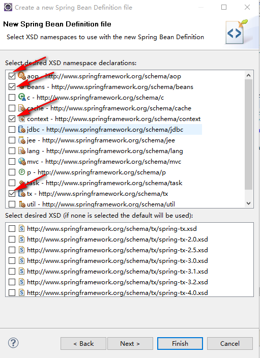

SSH框架整合基本步骤
 CoMath
CoMath
准备工作
首先需要找到开发软件：Eclipse-J2EE版本，并且安装相应插件（最好安装，便于初期简单编程）.
注：云盘中一个压缩包中有完整软件.
安装插件步骤： 打开Eclipse-J2EE版本，找到Help→Install New SoftWare → Work with右面的Add ，在Archive…中找到对应软件的路径，点集OK即可. 需要的软件：
- hibernate的插件：hibernatetools-Update-4.1.1.Final_2013-12-08_01-06-33-B605.zip
- Spring的插件：springsource-tool-suite-3.4.0.RELEASE-e4.3.1-updatesite.zip
如果没有服务器，需要安装Tomcat服务器.
Spring→Hibernate→Struts的顺序整合框架
1. 加入Spring
1) 加入 Spring 所需要的 Jar 包文件
找到 Spring 的 jar 包文件夹，\Jar包文件\Spring4.0.0\spring-framework-4.0.0.RELEASE\required，大约15个左右；
- com.springsource.net.sf.cglib-2.2.0.jar
- com.springsource.org.aopalliance-1.0.0.jar
- com.springsource.org.aspectj.weaver-1.6.8.RELEASE.jar
- commons-logging-1.2.jar
- spring-aop-4.0.0.RELEASE.jar
- spring-aspects-4.0.0.RELEASE.jar
- spring-beans-4.0.0.RELEASE.jar
- spring-context-4.0.0.RELEASE.jar
- spring-core-4.0.0.RELEASE.jar
- spring-expression-4.0.0.RELEASE.jar
- spring-jdbc-4.0.0.RELEASE.jar
- spring-orm-4.0.0.RELEASE.jar
- spring-tx-4.0.0.RELEASE.jar
- spring-web-4.0.0.RELEASE.jar
- spring-webmvc-4.0.0.RELEASE.jar
2) 配置 web.xml 文件
配置web.xml文件可以找到ContextLoaderListener会自动生成以下代码，随后将Location改为applicationContext（Spring配置文件）的路径.
<!-- 配置 Spring 配置文件的名称和位置 -->
<context-param>
<param-name>contextConfigLocation</param-name>
<param-value>classpath:applicationContext.xml</param-value>
</context-param>
<!-- 启动 IOC 容器的 ServletContextListener -->
<listener>
<listener-class>
org.springframework.web.context.ContextLoaderListener
</listener-class>
</listener>
3) 加入 Spring 的配置文件
可以先创建一个资源文件conf，将资源文件放入其中（也可以直接在src下创建），在资源文件下创建一个Spring的配置文件点击右键找到Spring Bean Configuration File，输入配置文件的名字，（注意这里面的名字要与web.xml下的的配置文件的名字相同，也就是一个文件）；然后选中aop、beans、context、tx等选项，（注意这里面所选取的是最基本的，根据需要可以自行添加其他选项）；最后Finish即可.  
2. 加入Hibernate
1). 建立持久化类, 和其对应的 .hbm.xml 文件, 生成对应的数据表
i. 配置hibernate.cfg.xml文件：
鼠标右键找到Hibernate Configuration File(cfg.xml)创建hibernate.cfg.xml配置文件并配置基本信息（可根据需求自行添加）.
<hibernate-configuration>
<session-factory>
<!-- 配置基本属性 -->
<!-- 方言 -->
<property name="hibernate.dialect">org.hibernate.dialect.SQLServer2008Dialect
</property>
<property name="hibernate.dialect"> org.hibernate.dialect.MySQL5InnoDBDialect</property>
<!-- 是否显示及格式化SQL -->
<property name="hibernate.show_sql">true</property>
<property name="hibernate.format_sql">true</property>
<property name="hibernate.temp.use_jdbc_metadata_defaults">false</property>
<!-- 生成数据表的策略 -->
<property name="hibernate.hbm2ddl.auto">update</property>
<!-- 生成二级缓存 -->
</session-factory>
</hibernate-configuration>
ii. 建立持久化类:
也就是平时所说的对象类、beans（一般创建在domain包下或者entities下），并生成对应参数的getter and setter；之后鼠标右键创建Hibernate XML Mapping file (hbm.xml)文件，直接创建即可. 就会生成对应的*. hbm.xml文件（根据不同的需求可能够对*. hbm.xml文件进行适当的修改）
2). Spring 整合 Hibernate
步骤
① 加入 jar 包: 找到 Hibernate 的 jar 包文件夹，\Jar包文件\Jar包文件\Hibernate4.2.21\hibernate-release-4.2.21.Final\lib\required路径下的所有 jar 包.
- antlr-2.7.7.jar
- dom4j-1.6.1.jar
- hibernate-commons-annotations-4.0.2.Final.jar
- hibernate-core-4.2.21.Final.jar
- hibernate-jpa-2.0-api-1.0.1.Final.jar
- javassist-3.18.1-GA.jar
- jboss-logging-3.1.0.GA.jar
- jboss-transaction-api_1.1_spec-1.0.1.Final.jar
② 在类路径下加入 hibernate.cfg.xml 文件，并在其中配置 hibernate 的基本属性
③ 建立持久化类和其对应的 .hbm.xml 文件（过）
④ 和 Spring 进行整合（过）
- 加入c3p0和SQLServer的驱动（需要引入相关jar包文件：c3p0-0.9.2.1.jar、sqljdbc4.jar（SQL2005））
（c3p0:是一个 数据库连接池 ，利用 sqljdbc4 建立与数据库的连接 ， 并且管理这些连接，不用每次访问数据库都 重新发出数据库连接请求；大大提升性能）
具体实现： 首先要创建*.properties文件，并对其进行配置，主要为数据库的相关参数设置.
<!-- 资源文件样式 -->
jdbc.user=sa
jdbc.password=sa123
jdbc.driverClass=com.microsoft.sqlserver.jdbc.SQLServerDriver
jdbc.jdbcUrl=jdbc:sqlserver://localhost:1433; DatabaseName=PwdManagerTest
jdbc.initialPoolSize=5
jdbc.maxPoolSize=10
然后在applicationContext.xml中添加
<!-- 导入资源文件 -->
<context:property-placeholder location="classpath:db.properties" />
<!-- 配置 C3P0 数据源 -->
<bean id="dataSource" class="com.mchange.v2.c3p0.ComboPooledDataSource">
<property name="user" value="${jdbc.user}"></property>
<property name="password" value="${jdbc.password}"></property>
<property name="driverClass" value="${jdbc.driverClass}"></property>
<property name="jdbcUrl" value="${jdbc.jdbcUrl}"></property>
<property name="initialPoolSize" value="${jdbc.initialPoolSize}"></property>
<property name="maxPoolSize" value="${jdbc.maxPoolSize}"></property>
</bean>
这里会报一个错误：Error creating bean with name ‘dataSource’ defined in class path resource [applicationContext.xml]:…
错误原因：缺少mchange-commons-java-0.2.3.4.jar包.
作用：mchange-commons-java-0.2.3.4.jar包是c3p0数据库连接池的辅助包，如果没有这个包系统启动时会报classnotfoundexception，这是更新c3p0-0.9.2版本后分离出来的包，0.9.1的时候还是只是一个包.
解决方法：导入mchange-commons-java-0.2.3.4.jar包即可.
路径：Jar包文件\C3P0\C3P0-0.9-2.1JAR\c3p0-0.9.2.1\lib...
- 在Spring 的配置文件中配置:数据源dataSource,SessionFactory,声明式事务（先了解事务，包括事务隔离级别等）
<!-- 配置 SessionFactory -->
<bean id="sessionFactory" class="org.springframework.orm.hibernate4.LocalSessionFactoryBean">
<property name="dataSource" ref="dataSource"></property>
<property name="configLocation" value="classpath:hibernate.cfg.xml"/>
<property name="mappingLocations" value="classpath:com/PwdManager/domain/*.hbm.xml" />
</bean>
说明：执行到当前操作即可打开服务器，运行当前项目检测，正常情况下，不会报错，没有错误信息，而且在数据库中会生成对应的表结构.
<!-- 配置 Spring 的声明式事务 -->
<!-- 1. 配置 Hibernate 的事务管理器 -->
<bean id="transactionManager" class="org.springframework.orm.hibernate4.HibernateTransactionManager">
<property name="sessionFactory" ref="sessionFactory"></property>
</bean>
<!-- 2. 配置事务属性 -->
<tx:advice id="txAdvice" transaction-manager="transactionManager">
<tx:attributes>
<tx:method name="get*" read-only="true"/>
<tx:method name="*"/>
</tx:attributes>
</tx:advice>
<!-- 3. 配置事务切入点,再把事务属性和事务切入点关联起来 -->
<aop:config>
<!-- 任一修饰符,任意返回值 ..下的所有类下的所有方法,参数值任意-->
<aop:pointcut expression="execution(* com.PwdManager.service.*.*(..))" id="txPointcut"/>
<!-- 把事务属性和事务切入点关联起来 -->
<aop:advisor advice-ref="txAdvice" pointcut-ref="txPointcut"/>
</aop:config>
3. 加入 Stuts2
1) 加入 jar 包
找到 Stuts2 的 jar 包文件夹，\Jar包文件 \Jar包文件\Struts2.3.34\struts-2.3.34\apps\struts2-blank\WEB-INF\lib路径下的所有 jar 包.
- xwork-core-2.3.34.jar
- struts2-spring-plugin-2.3.34.jar
- struts2-json-plugin-2.3.34.jar
- struts2-core-2.3.34.jar
- ognl-3.0.21.jar
- log4j-core-2.3.jar
- log4j-api-2.3.jar
- javassist-3.11.0.GA.jar
- freemarker-2.3.22.jar
- commons-lang3-3.2.jar
- commons-io-2.2.jar
- commons-fileupload-1.3.2.jar
- asm-tree-3.3.jar
- asm-commons-3.3.jar
- asm-3.3.jar
2) 在web.xml文件中配置Struts2的Filter
<!-- 配置 Struts2 的 Filter -->
<filter>
<filter-name>struts2</filter-name>
<filter-class>
org.apache.struts2.dispatcher.ng.filter.StrutsPrepareAndExecuteFilter
</filter-class>
</filter>
<filter-mapping>
<filter-name>struts2</filter-name>
<url-pattern>/*</url-pattern>
</filter-mapping>
3) 加入 Struts2 的配置文件
可以拷贝例子下的struts.xml文件，例子可以在Jar包文件\Struts2.3.34\struts-2.3.34\apps\struts2-blank\WEB-INF\src\java\struts.xml文件参考.
<?xml version="1.0" encoding="UTF-8" ?>
<!DOCTYPE struts PUBLIC
"-//Apache Software Foundation//DTD Struts Configuration 2.3//EN"
"http://struts.apache.org/dtds/struts-2.3.dtd">
<struts>
<constant name="struts.enable.DynamicMethodInvocation" value="false" />
<constant name="struts.devMode" value="true" />
<package name="default" namespace="/" extends="struts-default">
<action name="index">
<result type="redirectAction">
<param name="actionName">HelloWorld</param>
</result>
</action>
</package>
<!-- Add packages here -->
</struts>
4) 整合 Spring
① 加入 Struts2 的 Spring 插件的 jar 包 struts2-spring-plugin-2.3.34.jar.
② 在 Spring 的配置文件中正常配置 Action ,注意 Action 中需要配置 scope 属性为 prototype 不是单例的.
<bean id="XxxAction"> class="" scope="prototype">
<property name="" ref="" ></property>
</bean>
<!-- 实例 -->
<bean id="userloginDao" class="com.dao.userLoginDao">
<property name="sessionFactory" ref="sessionFactory"></property>
</bean>
<bean id="userloginService" class="com.service.userLoginService">
<property name="userLoginDao" ref="userloginDao"/>
</bean>
<bean id="userloginAction" class="com.action.userLoginAction" scope="prototype">
<property name="userLoginService" ref="userloginService"/>
</bean>
这里面需要注意的是：如果是在搭建初期只是为了测试是否成功，在创建对应的Package和Class后，在属性值为sessionFactory的Class下要创建sessionFactory的实例对象并设置setter方法，即<property name="sessionFactory" ref="sessionFactory"/>的<bean id="userloginDao" class="com.dao.userLoginDao">需要在类userLoginDao下实例：private SessionFactory sessionFactory;并设置setter方法（可以带上getter方法），以下其他bean相同. （依赖注入相关知识）
③ 在Struts2的配置文件中配置Action时,class 属性指向该 Action 在Spring IOC中的id.
首先要定义拦截器 I. 在JSP页面如果没有采用Ajax可以直接使用以下action
<action name="XxxName" class="XxxAction">
<result>/success.jsp</result>
</action>
JSP 页面form表单提交直接交给XxxName，即：<form action="XxxName">
这种情况需要接受的action中提供form表单中input的name所对应的getter和setter
然后可以直接获取到form表单中的值.
II. 如果JSP页面使用了Ajax则需要使用以下action
<action name="userJson-*" class="com.action.userJsonAction" method="{1}">
<result name="success" type="json">
<param name="root">result</param>
</result>
</action>
result为返回ajax的data数据
这里需要注意的是在使用Ajax搭配Json实现数据的交互时，需要定义拦截器的时候继承json-default拦截器，同时继承两者也可以. 这里要是采用AJAX的方式，可能需要引入JSON的相关Jar包： 但是这里需要注意的是存在两种不同的JSON的Jar包，主要区别在于实现构造方法的变量不同.
例如： √
JSONObject json = new JSONObject(map);带参构造需要引入org.json.JSONObject; JSONObject json = new JSONObject(); 无参构造引入的是net.sf.json.JSONObject
org.json.JSONObject类在json.jar包下—— \Jar包文件\JSON\org.json
net.sf.json.JSONObject其他包中—— \Jar包文件\JSON\net.sf.json
{
- commons-beanutils-1.7.0.jar
- commons-collections-3.2.1.jar
- commons-httpclient-3.1.jar
- commons-lang-2.3.jar
- commons-logging-1.1.1.jar
- ezmorph-1.0.3.jar
- json-lib-2.2.3-jdk15.jar
}
获取ajax传过来的参数需要使用：
// 用于获取data数据，定义request
HttpServletRequest request = null;
request = ServletActionContext.getRequest();
String UserID = request.getParameter("UserID");
实例：
<struts>
<constant name="struts.i18n.encoding" value="UTF-8"></constant>
<constant name="struts.enable.DynamicMethodInvocation" value="false" />
<constant name="struts.devMode" value="true" />
<package name="default" namespace="/" extends="json-default,struts-default">
<!-- 定义新的拦截器栈, 配置prepare拦截器栈的alwaysInvokePrepare参数值为false -->
<interceptors>
<interceptor-stack name="sshStack">
<interceptor-ref name="paramsPrepareParamsStack">
<param name="prepare.alwaysInvokePrepare">false</param>
</interceptor-ref>
</interceptor-stack>
</interceptors>
<!-- 使用新的拦截器栈 -->
<default-interceptor-ref name="sshStack"></default-interceptor-ref>
<action name="userJson-*" class="com.action.userJsonAction" method="{1}">
<result name="success" type="json">
<param name="root">result</param>
</result>
</action>
</package>
</struts>
$.ajax({
url : "blogJson-readArticle",
type : "POST",
data : {
userID : "132",
artID : $("input:hidden[name='artID']").val()
},
timeout : 30000,
dataType : "json",// 设置需要返回的数据类型
scriptCharset : 'utf-8',
success : function(data) {
var obj = $.parseJSON(data);
var data = obj.data;
},
error : function(XMLHttpRequest, textStatus, errorThrown) {
alert(errorThrown + 123);
}
});
4. 完成功能
具体方式可以按照自己的要求实施，大致方法： 在dao层可以直接管理有关数据库的一切方法，通过service层调用dao层的方法，在action层对service方法进行调用即可；这里需要注意一点，就是关于一些属性的设置问题，具体跟上述使用JSON时注意的事项一样.
Xin态好先生
机会是给有准备的人的.